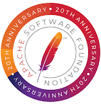

Historia y Fundación
La Apache Software Foundation (ASF) se creó en 1999 como una organización sin fines de lucro para apoyar proyectos de software de código abierto. La ASF se rige por un modelo de desarrollo comunitario donde las decisiones son tomadas por consenso. Los desarrolladores contribuyen voluntariamente y son reconocidos por sus méritos, lo que fomenta una comunidad activa y participativa.
La ASF comenzó con el Servidor HTTP Apache como su proyecto principal, pero con el tiempo ha expandido su portafolio para incluir más de 300 proyectos, que cubren una amplia gama de necesidades tecnológicas, desde sistemas de gestión de bases de datos hasta frameworks de procesamiento de datos en tiempo real.
